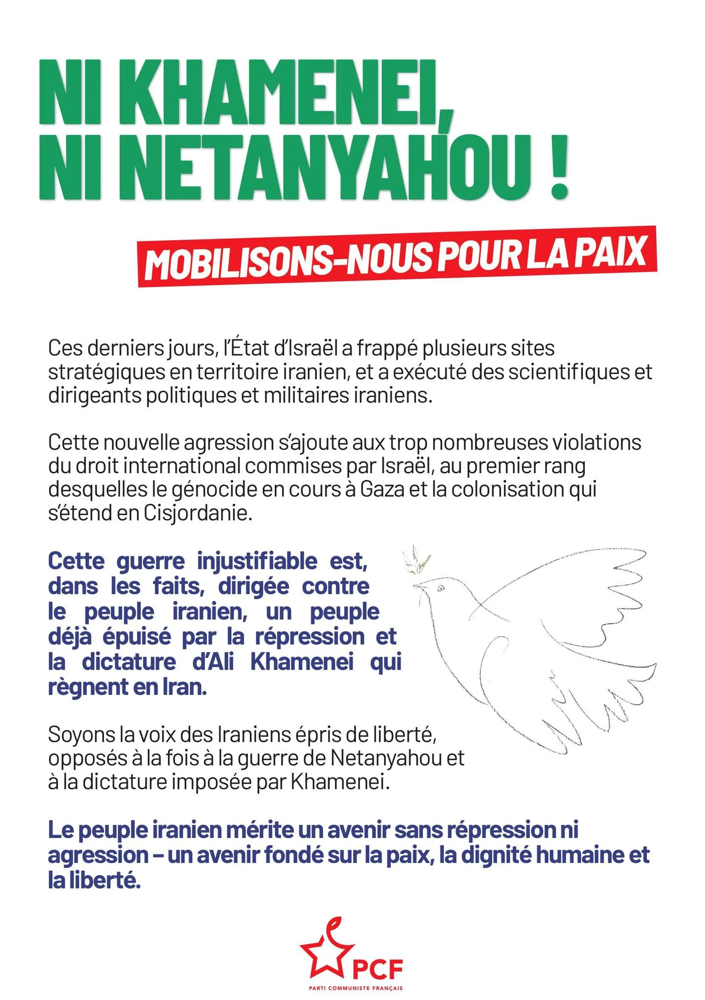
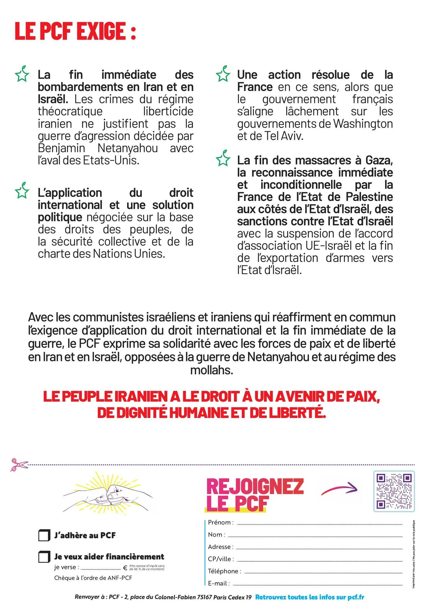

Publication d’archives
Ni Khamenei, ni Netanyahou : mobilisons-nous pour la paix !
Date indiquée par Facebook · 19 juin 2025
Texte conservé avec la publication
Ni Khamenei, ni Netanyahou : mobilisons-nous pour la paix !
Contexte du dossier
Un message du 19 juin résume la position par « Ni Khamenei, ni Netanyahou », avec l’exigence de paix. Le 26 juin, la page relaie la lettre de Cécile Cukierman, sénatrice de la Loire et présidente du groupe CRCE-K, au président de la République après le sommet de l’OTAN à La Haye. Elle conteste l’engagement vers une dépense militaire de 5 % du PIB et demande un débat démocratique. La lettre est celle d’une parlementaire identifiée ; le relais ne la transforme ni en décision du Parlement ni en texte fédéral.


Sources
Archive rouge · export Facebook · AR-0002-FB-01089
À lire aussi · Des canadairs, pas des rafales !